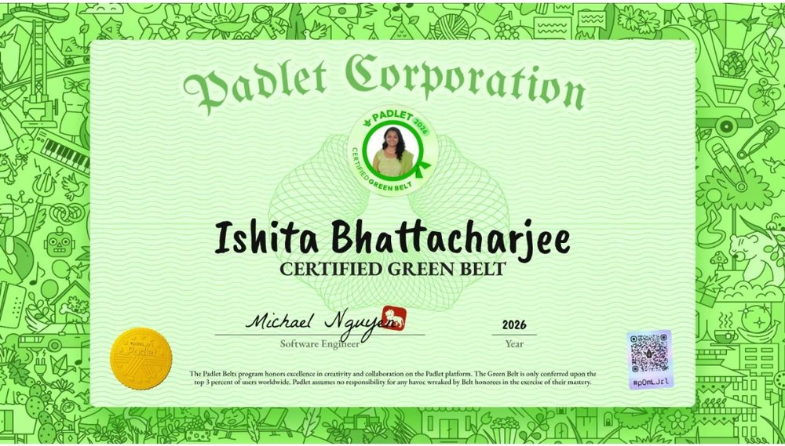

The situation
I recently earned the Padlet Green Belt Certification, recognising the top 10% of Padlet users globally. While I am grateful for the recognition, what matters more to me is what this represents in my classroom.

What I noticed
Over the years, Padlet has become more than a digital board. It has become a space where students feel seen. A space where those who hesitate to verbally share still have a voice. Where thinking is captured in progress, not just in polished answers. Where opinions are shared without fear, and perspectives are respected, even when they differ.
I have watched students read each other's responses with curiosity, build on ideas, and realise that their thoughts carry weight. In subtle ways, Padlet has helped me shift the classroom dynamic from teacher-led discussions to a more democratic learning environment where every voice matters.
What I learned
This certification reminds me that meaningful technology use is not about novelty or volume. It is about intention. It is about designing spaces where student agency, reflection and inclusion are not add-ons, but the foundation.
Thank you to Malcolm Nicolson, Aprajita Ralli, Sonal Shrivastava and Sreenidhi International School.